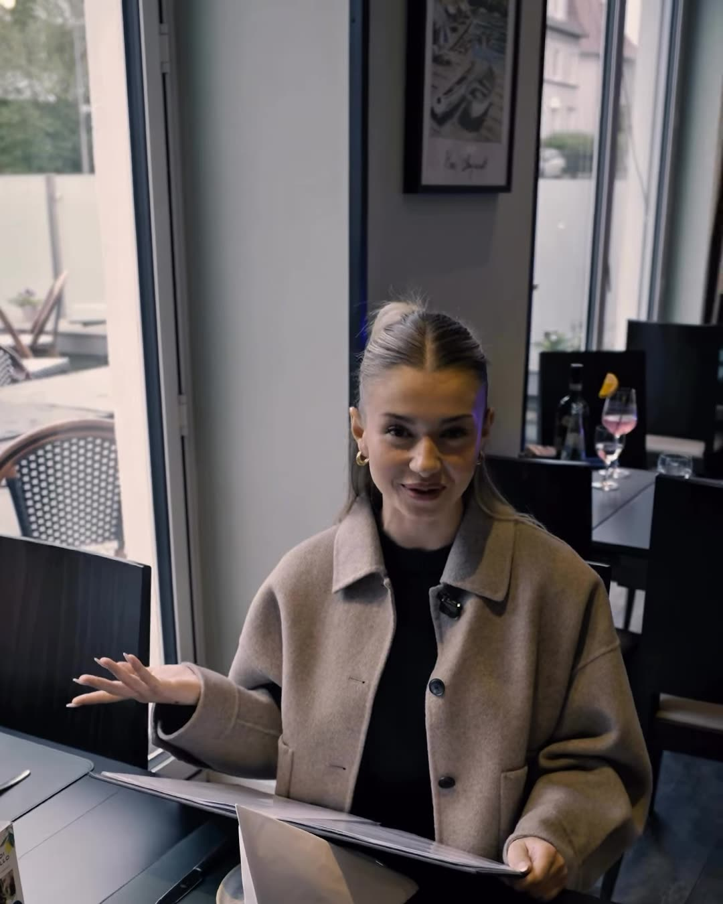
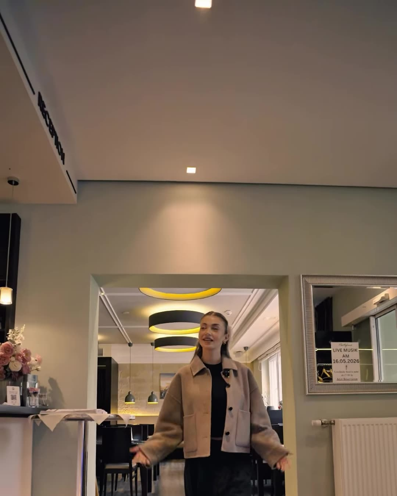
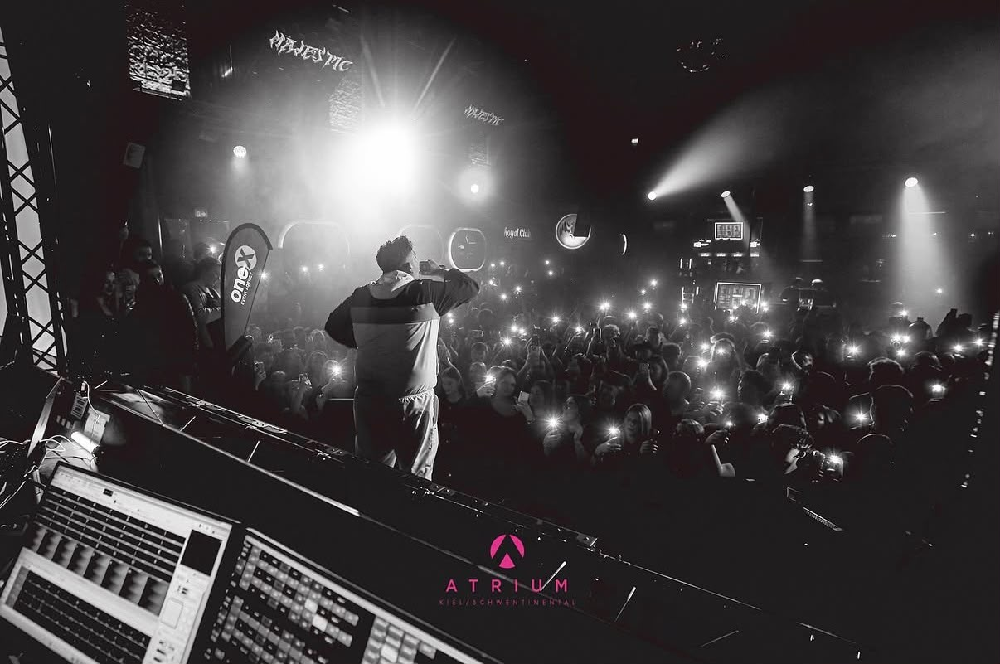

Music
[Artist] – Es tut mir leid
Release aus einem Guss: Musikvideo, Cover und Promo-Stills im selben Look.
- Leistungen
- Musikvideo, Cover Artwork, Creative Direction
- Kunde
- [Artist]
Our Work
Ausgewählte Projekte – vom Konzept bis zum fertigen Content.
Music
Release aus einem Guss: Musikvideo, Cover und Promo-Stills im selben Look.


Brands
Reels für ein Restaurant – nahbar, schnell geschnitten, gemacht für den Feed.


Personal Branding
Drei Lichtstimmungen, ein Gesicht: Bildwelt für einen starken persönlichen Auftritt.


Social & Creator
Reels und Studio-Content für Creator, die im Feed auffallen wollen.


Models
Casting und Lookbook – passende Gesichter für Marke und Kampagne.

Music
Live-Fotografie, die die Energie im Raum festhält.
![Screenshot der Website für [Kunde].](images/web-ibrahim.jpg)
Web
Website mit klarem Look – schnell, responsive und auf Anfragen ausgelegt.